Companion page for the paper accepted at IEEE SLT 2026 (Spoken Language Technology Workshop)
Leading commercial and open-source Text-to-Speech models do not reproduce the regional phonetic diversity of Brazilian Portuguese. By aggregating disparate dialects into a single training distribution, they generate a “diluted” accent: a phonetic profile that tries to represent all regional distributions at once and ends up carrying phonological ambiguity dissociated from natural sociophonetic processes. This work extracts phoneme-level features at consonantal and vocalic realizations with high geographic variance, by combining multilingual phone recognizers with classical signal processing. The distributional gap over these features is large enough to separate natural from synthetic voices with an unsupervised Kernel Density Estimator, and the same interpretable, low-dimensional features are useful on Brazilian Portuguese anti-spoofing benchmarks.
This page collects the material referenced from the paper: the synthesis recipes and prompt texts, the full experimental setup, additional feature distributions, the per-held-out-group breakdown of the cross-dataset experiment, and the accuracy and clustered statistics behind the within-utterance switching analysis.
Yes. A Kernel Density Estimator fitted only on the 364 natural speakers flags synthetic voices as out-of-distribution, reaching 93.9% AUROC on a transductive t-SNE 2D projection and 74.3% on a deployable inductive Isomap 15D projection (72.1% for PCA 5D). No synthetic sample is seen during fitting.
Synthetic voices show shifted sibilant realizations at /s/ coda (Cliff’s δ = +0.77), a distorted spectral shape at /r/ coda (δ = +0.66), a narrower and displaced /o/–/ɔ/ vowel space, and more within-utterance realization switching for /r/ coda and /d,t/ palatalization (δ = +0.49 and +0.55 per utterance). The feature distributions and the switching statistics below extend the paper’s Figures 3 and 4.
On BRSpeech-DF official splits the best configuration reaches 2.00% EER, against 30.67% for the SLS-ECAPA baseline. On FakeBRAccent under speaker-disjoint cross-validation it reaches 8.0 ± 0.8% EER. Under double leave-one-dataset-out, where an entire TTS group and an entire natural corpus are held out simultaneously, the overall EER is 6.09%, and 8.13% for the fully interpretable feature set.
On corpora built entirely from voice cloning. A cloning model follows the accent realizations of its target speaker, which narrows the variability the method relies on and makes accent-based disambiguation harder than for the general-purpose, mixed-identity voices found in commercial TTS defaults. The three markers also do not disambiguate every Brazilian variety on their own.
The natural side draws on publicly available Brazilian Portuguese corpora; the
download helpers live in the
pt-br-accent-toolbox
package (tools/download_datasets.py and the per-corpus scripts beside it). The synthetic side
was generated with the scripts below, each of which reads the same sentence list and writes 16 kHz mono WAV.
| Provider | Model | Voices | Voice identifiers | Settings |
|---|---|---|---|---|
| Azure AI Speech commercial | pt-BR *Neural voices | 10 | pt-BR-AntonioNeural, pt-BR-FabioNeural, pt-BR-DonatoNeural, pt-BR-HumbertoNeural, pt-BR-NicolauNeural, pt-BR-FranciscaNeural, pt-BR-BrendaNeural, pt-BR-ElzaNeural, pt-BR-GiovannaNeural, pt-BR-LeticiaNeural | SSML, 16 kHz PCM output |
| Google Cloud TTS commercial | pt-BR Neural2 / WaveNet / Standard | 10 | pt-BR-Neural2-A, pt-BR-Neural2-C, pt-BR-Wavenet-A, pt-BR-Wavenet-D, pt-BR-Standard-A, pt-BR-Neural2-B, pt-BR-Wavenet-B, pt-BR-Wavenet-C, pt-BR-Wavenet-E, pt-BR-Standard-B | LINEAR16, 16 kHz |
| OpenAI TTS commercial | tts-1-hd | 9 | onyx, echo, fable, ash, nova, shimmer, alloy, coral, sage | PCM 24 kHz, resampled to 16 kHz |
| ElevenLabs commercial | eleven_multilingual_v2 | 10 | 36rVQA1AOIPwpA3Hg1tC, tS45q0QcrDHqHoaWdCDR, CstacWqMhJQlnfLPxRG4, hwnuNyWkl9DjdTFykrN6, YNOujSUmHtgN6anjqXPf, 33B4UnXyTNbgLmdEDh5P, lWq4KDY8znfkV0DrK8Vb, oJebhZNaPllxk6W0LSBA, RGymW84CSmfVugnA5tvA, cyD08lEy76q03ER1jZ7y | stability 0.5, similarity_boost 0.75, pcm_16000 |
| F5-TTS pt-BR open-source | firstpixel/F5-TTS-pt-br | 2 | f5_ptbr_male, f5_ptbr_female | zero-shot cloning of two ~8 s Azure reference clips |
| Qwen3-TTS open-source | Qwen/Qwen3-TTS-12Hz-1.7B-CustomVoice | 9 | aiden, dylan, eric, ono_anna, ryan, serena, sohee, uncle_fu, vivian | bfloat16, preset voices, resampled to 16 kHz |
| Piper open-source | pt_BR voices (rhasspy/piper) | 4 | pt_BR-cadu-medium, pt_BR-edresson-low, pt_BR-faber-medium, pt_BR-jeff-medium | ONNX, 16 kHz native |
| Kokoro open-source | hexgrad/Kokoro-82M | 3 | pf_dora, pm_alex, pm_santa | lang_code 'p', 24 kHz resampled to 16 kHz |
57 voices in total, each synthesizing the same 50 sentences. Voice identifiers and model names are parsed directly from the synthesis scripts linked in the provider name, which are the scripts that produced the corpus. Synthesis ran between April and June 2026; commercial providers may since have updated the underlying models.
API credentials are never stored in these scripts: commercial providers take a
--key argument or an environment variable.
All 50 sentences below were synthesized by every one of the 57 voices. They are a phonetically balanced subset of the ALCaim 1000-sentence reading list, chosen by a greedy selection that minimizes the L1 distance between the subset’s phone-unit distribution and that of the full list, so the synthetic side carries the same phonological coverage as the natural corpora.
The switching metric needs at least two detections of a marker inside a single utterance, which required synthesizing additional longer texts so that the synthetic side matched the markers-per-sentence rate of the natural recordings.
Pool composition, front-end settings, feature definitions and model hyperparameters for every experiment in the paper.
| Natural speech pool | |
|---|---|
| Speakers (Tables I-II, Fig. 1-3) | 364 = 210 TAGARELA/Spotify + 92 annotated + 62 BRSpeech-DF bonafide |
| Speakers (Table V, double LODO) | 281 = 189 TAGARELA/Spotify + 92 annotated (BRSpeech-DF excluded) |
| Source corpora | CORAA (CORAL, NURC-RE, TED), Mozilla Common Voice, CoLingPB, CML-TTS, NURC-SP, Certas Palavras, CETUC/ALCaim, TAGARELA (Spotify podcasts) |
| Selection criterion | multiple dialects and multiple recording chains, filtered for sample quality; no sociolinguistic labels used for selection |
| Utterance budget | up to 40 utterances per speaker for natural sources; 50 for the utterance-budget sweep of Fig. 2 (1-100) |
| Synthetic speech pool | |
| Voices | 57 TTS voices x 50 sentences (39 commercial + 18 open-source) |
| Text set | the same 50 phonetically balanced sentences for every voice (sentences_50.txt) |
| Longer-text set | sentences_51_100.txt, synthesized for the switching experiment, which needs >= 2 marker detections per utterance |
| Output format | 16 kHz mono PCM WAV; providers returning another rate are resampled with torchaudio |
| Note | three further voice directories exist on disk (azure_henrique, openai_verse, qwen3_bella) and are used only by the switching experiment, not by the 57-voice detection pool |
| Cross-dataset benchmarks | |
| BRSpeech-DF | official train/validation/test splits (Table III) |
| FakeBRAccent | no official split; speaker-disjoint 5-fold CV over 10 seeds, since the same speaker appears in both bonafide and spoof parts (Table IV) |
| MLAAD (pt subset) | 16 TTS systems; synthetic only, so training always draws natural speech from the other sources (Table V) |
| Audio front-end | |
| Sample rate | 16 kHz mono throughout |
| Marker localization | ZIPA phone recognizer in forced-alignment mode (ONNX CTC, 20 ms frames) |
| Marker window | +/- 80 ms around the detected marker frame; /d,t/ uses a broad window for spectral moments and a narrow +/- 2-frame window for ZIPA probabilities |
| PhoneticXeus | group-pooled phone logits at the same marker frames (+/- 2 frames) |
| Vowel formants | parselmouth Burg, 5 formants, 5000 Hz ceiling, 25 ms window, 50 Hz pre-emphasis, queried at ZIPA vowel spikes |
| Channel normalization (Table V only) | librosa silence trim at top_db=30, RMS normalization to 0.05 with 0.99 peak safety, and cepstral mean normalization of the MFCC block |
| Feature blocks | |
| ZIPA (46D) | 6 spectral moments + windowed CTC phone posteriors for each of the three markers |
| Formants (29D) | per-vowel mean F1/F2/F3 for a, E, e, i, O, o, u (21D) + long-term formant mean/SD (6D) + long-term F0 mean/SD (2D) |
| PhoneticXeus | group-pooled phone logits at marker positions |
| Aggregation | per-speaker mean over that speaker's clips; missing vowels imputed with the natural-pool column mean |
| Models and cross-validation | |
| KDE (Table I) | Gaussian kernel, bandwidth 2x Scott, OOD threshold at the 5th percentile of the training log-likelihood, 5-fold, seed 42 |
| Dimensionality reduction | t-SNE perplexity 40 / 1000 iterations / PCA init (transductive); Isomap 15 neighbours; PCA 5 components; seed 42 |
| Supervised detection (Table II) | XGBoost 400 trees, depth 4, lr 0.05, subsample and colsample 0.8; balanced 5-fold CV over 20 seeds; StandardScaler |
| Cross-dataset (Table V) | XGBoost 400 trees, depth 5, lr 0.05, subsample and colsample 0.8, scale_pos_weight, seed 0 |
| Realization classifiers (Fig. 4) | XGBoost 300 trees, depth 4, lr 0.05, subsample and colsample 0.9, L2 1.0, seed 0, on [spec6 | ZIPA | PhoneticXeus logits] |
| Metric | EER computed by sweeping the score threshold; accuracy at the EER operating point |
Figure 3 of the paper shows three of these panels. The features below are the most discriminative interpretable features for the natural-versus-synthetic contrast, ranked by tree-ensemble importance: the top 12 by mean absolute SHAP value of an XGBoost classifier and the top 12 by RandomForest impurity importance, both fitted on the same 364 natural and 57 synthetic speakers (the two rankings agree with Spearman ρ = 0.72). Each panel is labelled with the rankings that selected it. Importance is multivariate, so a feature can be useful to the classifier in combination with others while showing little separation on its own; two of the panels below are of that kind and carry a small, non-significant δ.
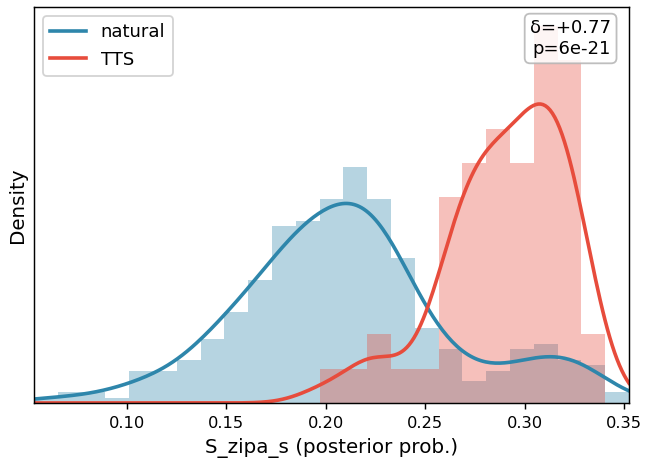
S_zipa_s · /s/ coda · δ=+0.77, p=6e-21 · SHAP+RF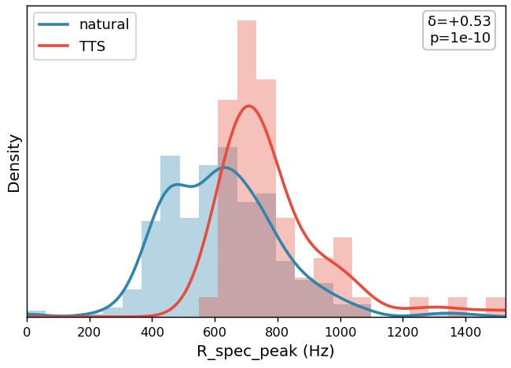
R_spec_peak · /r/ coda · δ=+0.53, p=1e-10 · SHAP+RF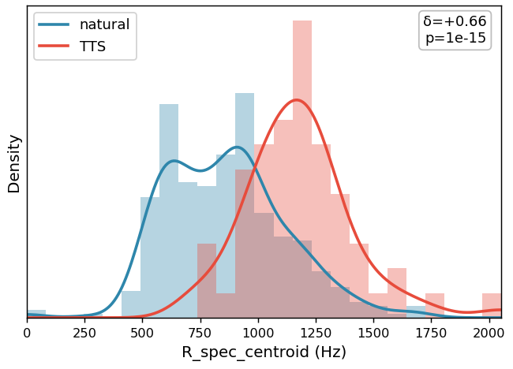
R_spec_centroid · /r/ coda · δ=+0.66, p=1e-15 · SHAP+RF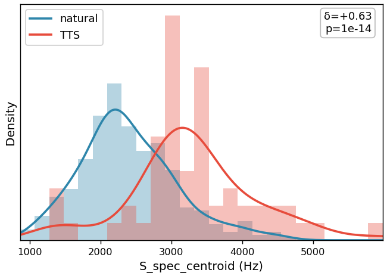
S_spec_centroid · /s/ coda · δ=+0.63, p=1e-14 · SHAP+RF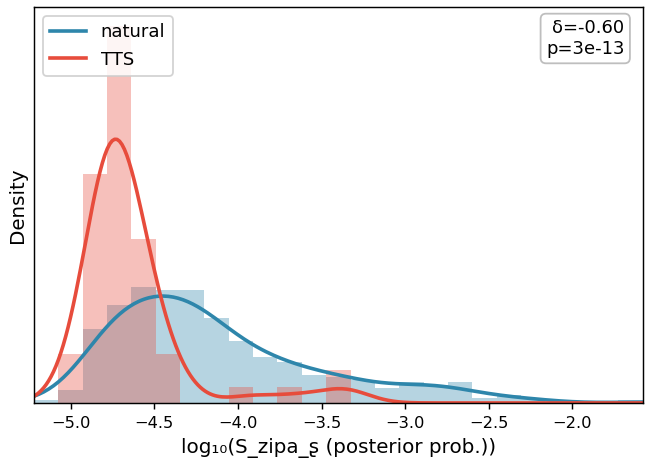
S_zipa_ʂ · /s/ coda · δ=-0.60, p=3e-13 · SHAP+RF · log axis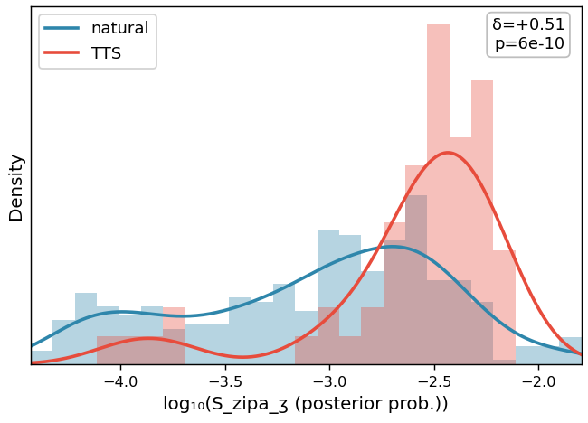
S_zipa_ʒ · /s/ coda · δ=+0.51, p=6e-10 · SHAP · log axis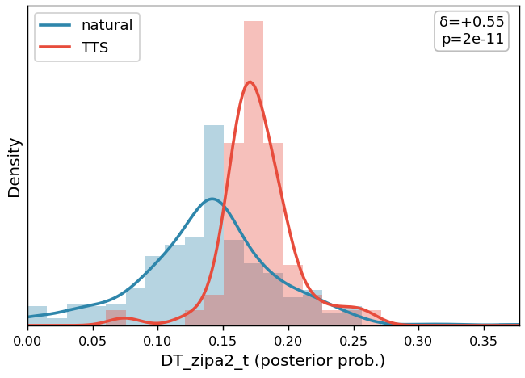
DT_zipa2_t · /d,t/ palatalization · δ=+0.55, p=2e-11 · SHAP+RF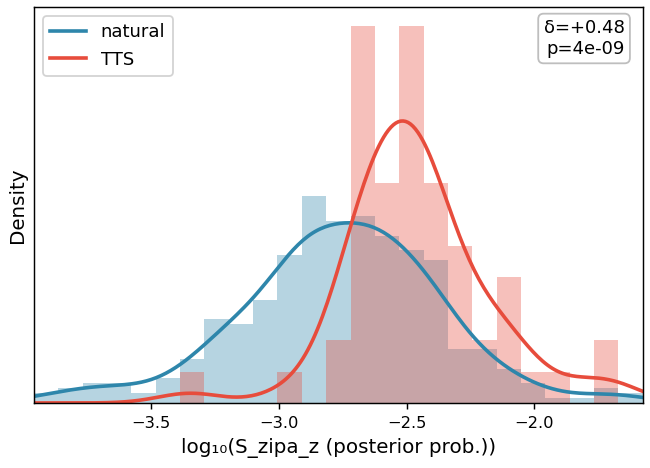
S_zipa_z · /s/ coda · δ=+0.48, p=4e-09 · SHAP · log axis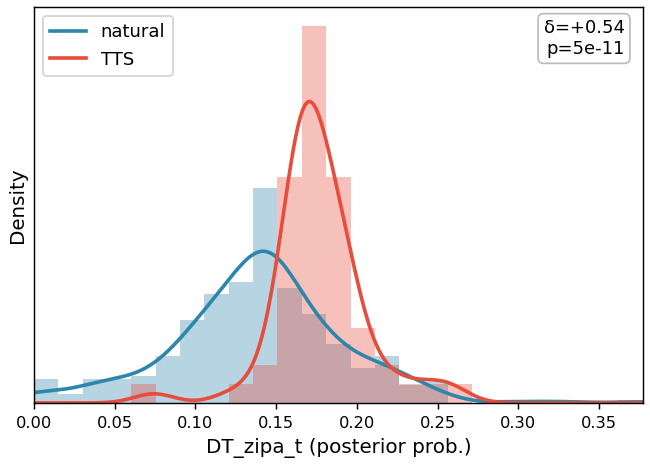
DT_zipa_t · /d,t/ palatalization · δ=+0.54, p=5e-11 · SHAP+RF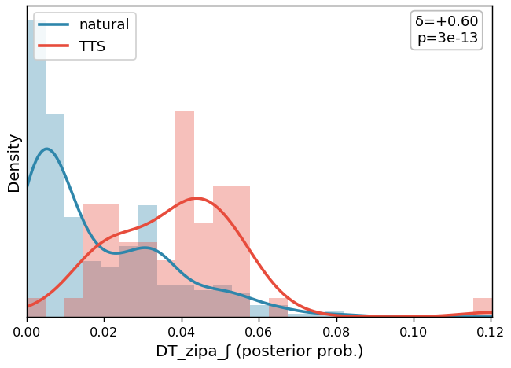
DT_zipa_ʃ · /d,t/ palatalization · δ=+0.60, p=3e-13 · SHAP+RF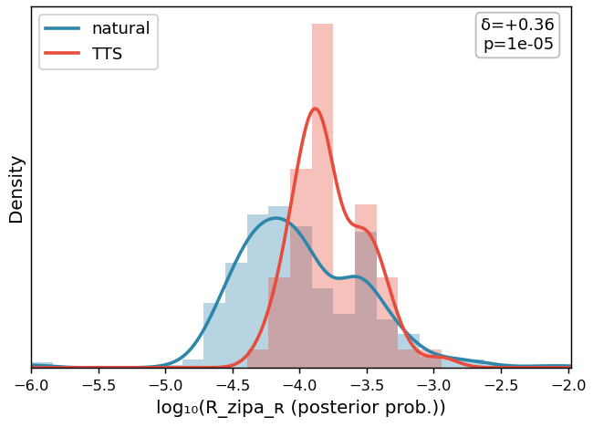
R_zipa_ʀ · /r/ coda · δ=+0.36, p=1e-05 · SHAP · log axis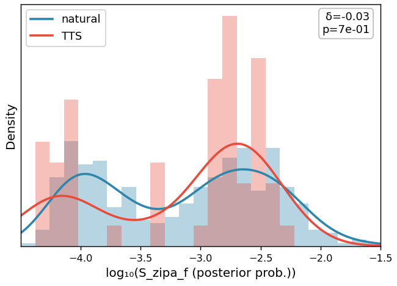
S_zipa_f · /s/ coda · δ=-0.03, p=7e-01 · SHAP · log axis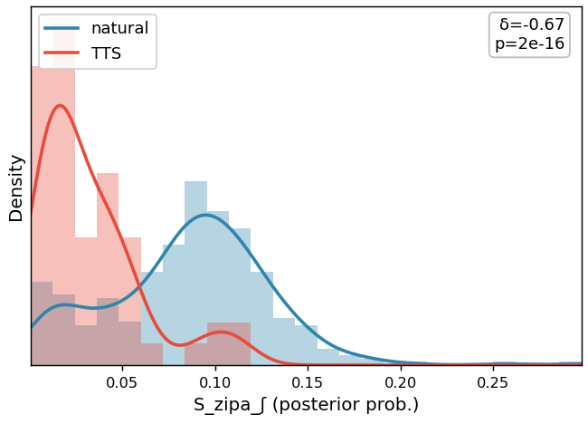
S_zipa_ʃ · /s/ coda · δ=-0.67, p=2e-16 · RF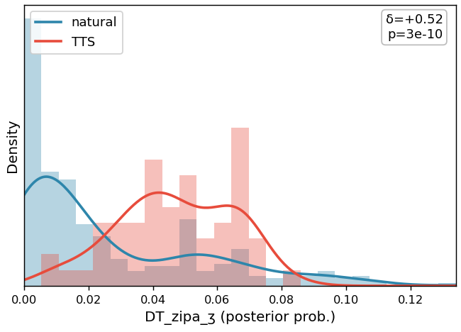
DT_zipa_ʒ · /d,t/ palatalization · δ=+0.52, p=3e-10 · RF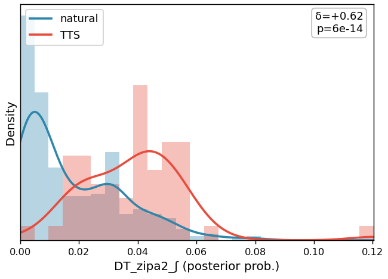
DT_zipa2_ʃ · /d,t/ palatalization · δ=+0.62, p=6e-14 · RF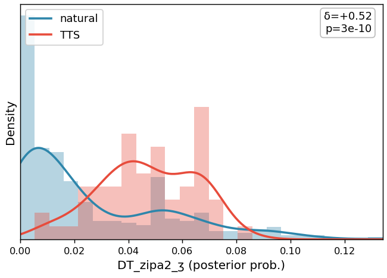
DT_zipa2_ʒ · /d,t/ palatalization · δ=+0.52, p=3e-10 · RF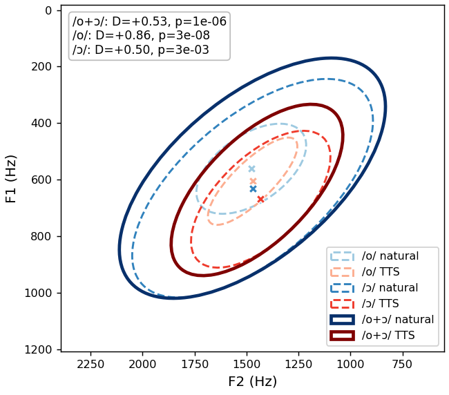
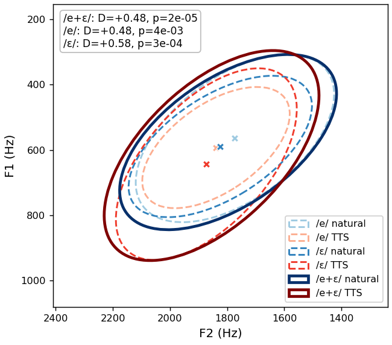
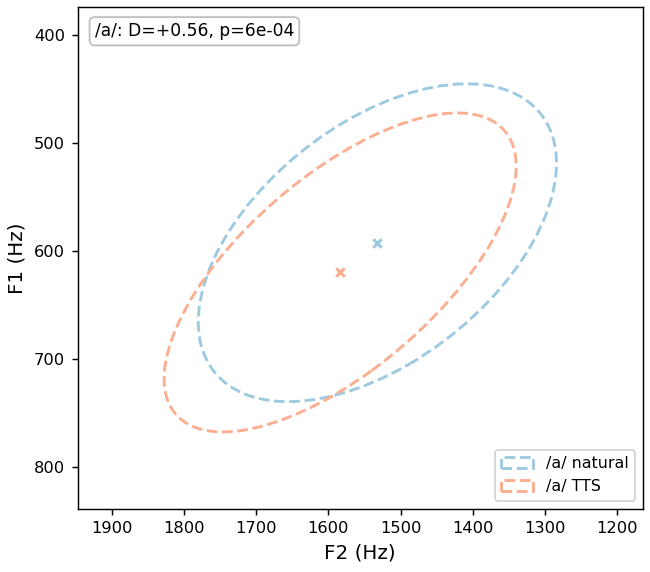
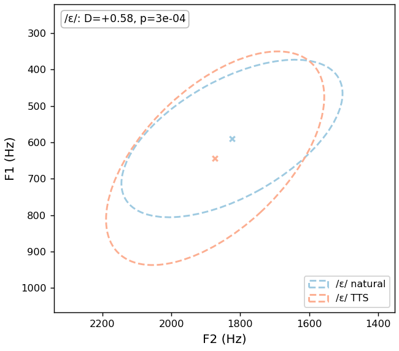
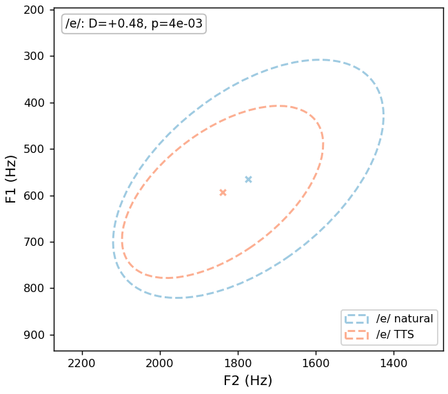
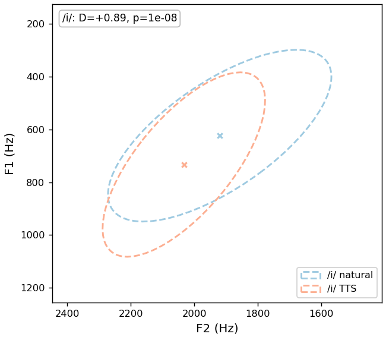
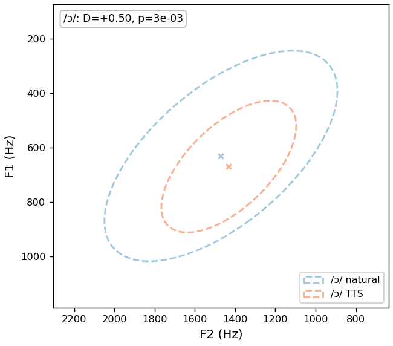
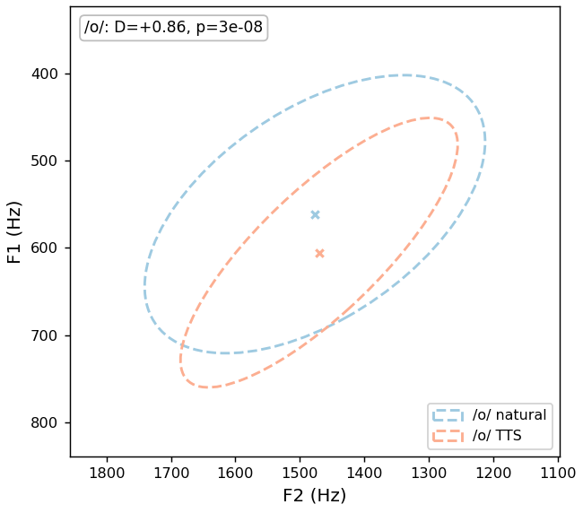
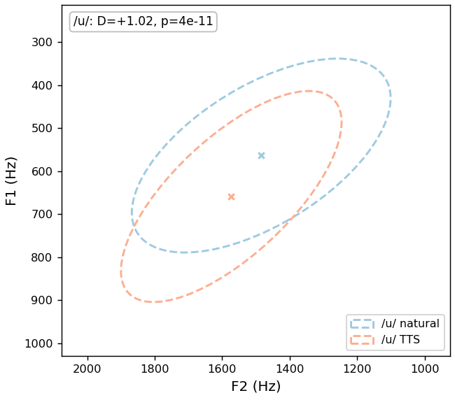
| Feature | Family | Natural median | Synthetic median | Cliff's δ | Mann-Whitney p |
|---|---|---|---|---|---|
| S_zipa_s | zipa | 0.2084 | 0.2958 | +0.773 | 6.2e-21 |
| S_zipa_ʃ | zipa | 0.08969 | 0.02114 | -0.675 | 2.5e-16 |
| R_spec_centroid | zipa | 855.5 | 1172 | +0.661 | 9.9e-16 |
| S_spec_variance | zipa | 1.884e+06 | 2.74e+06 | +0.634 | 1.4e-14 |
| S_spec_centroid | zipa | 2296 | 3214 | +0.633 | 1.5e-14 |
| DT_zipa2_ʃ | zipa | 0.01145 | 0.04069 | +0.619 | 5.5e-14 |
| DT_zipa_ʃ | zipa | 0.01137 | 0.04069 | +0.602 | 2.6e-13 |
| S_zipa_ʂ | zipa | 5.181e-05 | 1.808e-05 | -0.601 | 3.0e-13 |
| R_spec_variance | zipa | 3.023e+05 | 5.513e+05 | +0.563 | 8.0e-12 |
| S_spec_logBR | zipa | -0.2791 | 0.1812 | +0.561 | 9.3e-12 |
| MF_i_F3 | formant | 2790 | 2904 | +0.555 | 1.6e-11 |
| DT_zipa2_t | zipa | 0.1426 | 0.1711 | +0.551 | 2.3e-11 |
| S_spec_peak | zipa | 1506 | 2198 | +0.543 | 4.1e-11 |
| DT_zipa_t | zipa | 0.1428 | 0.1711 | +0.541 | 5.0e-11 |
| R_spec_peak | zipa | 613.5 | 733.9 | +0.529 | 1.3e-10 |
| MF_u_F1 | formant | 550.2 | 669.4 | +0.529 | 1.4e-10 |
| DT_zipa2_ʒ | zipa | 0.01452 | 0.04539 | +0.520 | 2.8e-10 |
| DT_zipa_ʒ | zipa | 0.01421 | 0.04539 | +0.517 | 3.4e-10 |
| MF_i_F2 | formant | 1922 | 2047 | +0.511 | 5.3e-10 |
| S_zipa_ʒ | zipa | 0.001135 | 0.003197 | +0.510 | 5.9e-10 |
| S_zipa_z | zipa | 0.001823 | 0.00323 | +0.484 | 4.1e-09 |
| LTFD_F1m | formant | 584.7 | 640.6 | +0.468 | 1.3e-08 |
| MF_i_F1 | formant | 606.5 | 734.5 | +0.455 | 3.4e-08 |
| S_spec_skew | zipa | 1.52 | 0.9438 | -0.435 | 1.3e-07 |
| S_zipa_ɕ | zipa | 8.013e-05 | 2.354e-05 | -0.424 | 2.6e-07 |
The 25 features with the largest absolute effect size, out of the 75 in the phonological feature space. The complete table is available as a CSV below. These p-values are not corrected for multiple comparisons and the features were chosen by an importance ranking fitted on the same data, so they describe the observed separation rather than test a pre-registered hypothesis.
Figure 4 of the paper measures how often a voice changes its realization of the same marker inside one utterance, using the binary Shannon entropy of the per-utterance mean dialectal probability given by a realization classifier. Two questions about that figure are answered here: how accurate those classifiers are, and what the comparison looks like when utterances are treated as clustered within speakers and voices rather than as independent.
| Marker | Task | Holdout | Clips | Classes | Accuracy | Balanced acc. | Macro F1 | Majority baseline |
|---|---|---|---|---|---|---|---|---|
| S | /s/ coda (chiado vs sibilant) | leave-one-dataset-out | 9256 | 2 | 0.781 | 0.645 | 0.659 | 0.762 |
| S | /s/ coda (chiado vs sibilant) | leave-one-speaker-out | 9256 | 2 | 0.833 | 0.718 | 0.741 | 0.762 |
| R | /r/ coda (carioca vs tap vs caipira) | leave-one-dataset-out | 3117 | 3 | 0.635 | 0.505 | 0.458 | 0.492 |
| R | /r/ coda (carioca vs tap vs caipira) | leave-one-speaker-out | 3117 | 3 | 0.686 | 0.638 | 0.642 | 0.492 |
| DT | /d,t/ (palatalized vs not) | leave-one-dataset-out | 3471 | 2 | 0.813 | 0.589 | 0.602 | 0.830 |
| DT | /d,t/ (palatalized vs not) | leave-one-speaker-out | 3471 | 2 | 0.844 | 0.620 | 0.645 | 0.830 |
Out-of-fold performance of the classifiers that produce the switching metric, on the human-annotated clips. Leave-one-dataset-out is the stricter protocol: the classifier never sees the held-out source corpus, so it cannot exploit its recording characteristics.
| Marker | Unit of analysis | n synthetic vs natural | Synthetic mean | Natural mean | Cliff's δ | p | Cluster-bootstrap 95% CI |
|---|---|---|---|---|---|---|---|
| S | utterance | 1731 vs 2341 | 0.710 | 0.673 | +0.076 | 3.5e-05 | [-0.03, +0.18] |
| S | speaker / voice | 57 vs 84 | 0.709 | 0.681 | +0.083 | 4.0e-01 | — |
| S | provider / corpus | 8 vs 84 | 0.715 | 0.681 | +0.074 | 7.4e-01 | — |
| R | utterance | 406 vs 760 | 0.897 | 0.677 | +0.486 | 1.1e-42 | [+0.40, +0.57] |
| R | speaker / voice | 56 vs 71 | 0.886 | 0.653 | +0.829 | 1.2e-15 | — |
| R | provider / corpus | 8 vs 71 | 0.896 | 0.653 | +0.908 | 5.6e-07 | — |
| DT | utterance | 957 vs 864 | 0.801 | 0.520 | +0.553 | 1.8e-92 | [+0.45, +0.64] |
| DT | speaker / voice | 57 vs 68 | 0.804 | 0.509 | +0.868 | 7.7e-17 | — |
| DT | provider / corpus | 8 vs 68 | 0.812 | 0.509 | +0.882 | 2.3e-06 | — |
| AGG | utterance | 3094 vs 3965 | 0.763 | 0.640 | +0.252 | 8.2e-74 | [+0.19, +0.32] |
| AGG | speaker / voice | 57 vs 92 | 0.764 | 0.631 | +0.661 | 1.3e-11 | — |
| AGG | provider / corpus | 8 vs 92 | 0.772 | 0.631 | +0.709 | 3.9e-04 | — |
The utterance rows reproduce the values printed in Figure 4. The confidence interval comes from resampling whole clusters (voices and speakers) with replacement, 4000 times, and applies to the utterance-level statistic.
| Marker | ICC(1) synthetic voices | Design effect | ICC(1) natural speakers | Design effect |
|---|---|---|---|---|
| S | 0.167 | 5.9 | 0.379 | 11.2 |
| R | 0.216 | 2.3 | 0.188 | 2.8 |
| DT | 0.072 | 2.1 | 0.312 | 4.6 |
| AGG | 0.053 | 3.8 | 0.163 | 7.8 |
Intra-cluster correlation of the switching value and the resulting design effect, that is, the factor by which the effective sample size is smaller than the number of utterances.
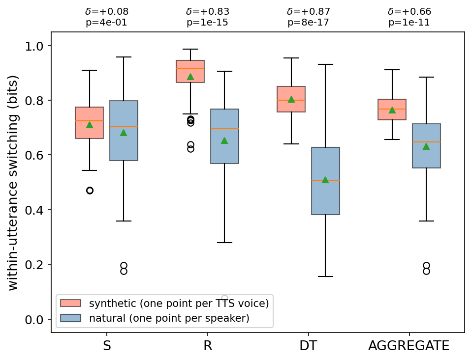
Figure 4 recomputed with one value per TTS voice and per natural speaker. Annotations give the speaker/voice-level Cliff’s δ with its p-value and the cluster-bootstrap interval for the utterance-level statistic.
The paper’s Table V reports a double leave-one-dataset-out protocol: for every pair of one held-out TTS group and one held-out natural corpus, a detector is trained on everything else and evaluated on that pair. This gives 24 synthetic groups (8 curated TTS providers and 16 MLAAD systems) × 7 natural corpora = 168 held-out cells per feature set. The tables below open up the two feature sets reported in the paper.
| Feature set | Overall EER (%) | Curated dataset | MLAAD | Overall, unweighted |
|---|---|---|---|---|
| ECAPA+Formants (221D) | 6.09 | 11.30 | 3.49 | 10.41 |
| ZIPA+PX+Formants (121D) | 8.13 | 12.13 | 6.13 | 9.82 |
The first three columns are the paper’s Table V values: means over the whole cross, weighted by the number of speakers in each held-out natural fold. Because the TAGARELA/Spotify fold carries 189 of the 281 natural speakers, it dominates that average; the last column gives the same cross weighting every fold equally.
| Held-out TTS group | Source | Voices / systems | ECAPA+Formants EER (%) | ZIPA+PX+Formants EER (%) |
|---|---|---|---|---|
| azure | curated | 10 | 4.95 | 7.44 |
| elevenlabs | curated | 10 | 12.49 | 11.10 |
| f5 | curated | 2 | 22.06 | 32.03 |
| curated | 10 | 12.03 | 15.80 | |
| kokoro | curated | 3 | 1.07 | 0.71 |
| openai | curated | 9 | 3.79 | 3.36 |
| piper | curated | 4 | 31.40 | 19.84 |
| qwen3 | curated | 9 | 2.61 | 6.76 |
| Fish-S2-Pro | MLAAD | 4 | 0.36 | 0.00 |
| Hume TADA-3B-ML | MLAAD | 4 | 1.07 | 10.49 |
| LEMAS-TTS | MLAAD | 4 | 1.07 | 0.36 |
| Llasa-1B-Multilingual | MLAAD | 1 | 2.49 | 8.90 |
| MOSS-TTS-1.7B | MLAAD | 4 | 0.36 | 1.07 |
| MOSS-TTS-8B | MLAAD | 4 | 0.36 | 6.05 |
| OmniVoice | MLAAD | 4 | 0.36 | 0.00 |
| OpenAI TTS-1 HD | MLAAD | 13 | 2.38 | 9.28 |
| Qwen3-TTS-12Hz-0.6B-Base | MLAAD | 5 | 0.71 | 0.00 |
| Qwen3-TTS-12Hz-1.7B-Base | MLAAD | 4 | 0.36 | 0.36 |
| VoxCPM2 | MLAAD | 4 | 1.07 | 15.84 |
| Voxtral | MLAAD | 2 | 9.25 | 20.82 |
| Bark | MLAAD | 1 | 34.16 | 24.91 |
| XTTS v1.1 | MLAAD | 1 | 0.00 | 0.00 |
| XTTS v2 | MLAAD | 1 | 1.42 | 0.00 |
| VITS (pt, CV) | MLAAD | 1 | 0.36 | 0.00 |
Each cell holds out that TTS group entirely — it appears in no training fold — and averages the resulting EER over the seven held-out natural corpora, weighted by their speaker counts. Groups with one or two voices give coarse EERs.
| Held-out natural corpus | Speakers | ECAPA+Formants: all | curated | MLAAD | ZIPA+PX+Formants: all | curated | MLAAD |
|---|---|---|---|---|---|---|---|
| TAGARELA / Spotify (RE + SP) | 189 | 3.61 | 8.33 | 1.26 | 5.84 | 13.30 | 2.10 |
| annotated — hashed IDs | 43 | 9.75 | 17.63 | 5.81 | 17.48 | 9.97 | 21.24 |
| annotated — NAME_F/M IDs | 22 | 11.51 | 17.10 | 8.72 | 11.11 | 13.43 | 9.94 |
| annotated — YouTube-style IDs | 15 | 14.82 | 16.94 | 13.75 | 5.14 | 3.75 | 5.83 |
| annotated — numeric IDs | 6 | 15.05 | 26.39 | 9.38 | 11.99 | 14.17 | 10.90 |
| annotated — lowercase-name IDs | 4 | 3.54 | 4.38 | 3.12 | 1.04 | 0.00 | 1.56 |
| annotated — other | 2 | 14.58 | 18.75 | 12.50 | 16.17 | 14.38 | 17.07 |
Each row holds out that natural corpus entirely; the EER is averaged over all 24 held-out TTS groups (and over the 8 curated / 16 MLAAD subsets). The annotated speakers are grouped by the identifier pattern of their source corpus, following the same split used in the switching experiments; folds with fewer than ten speakers are noisy.
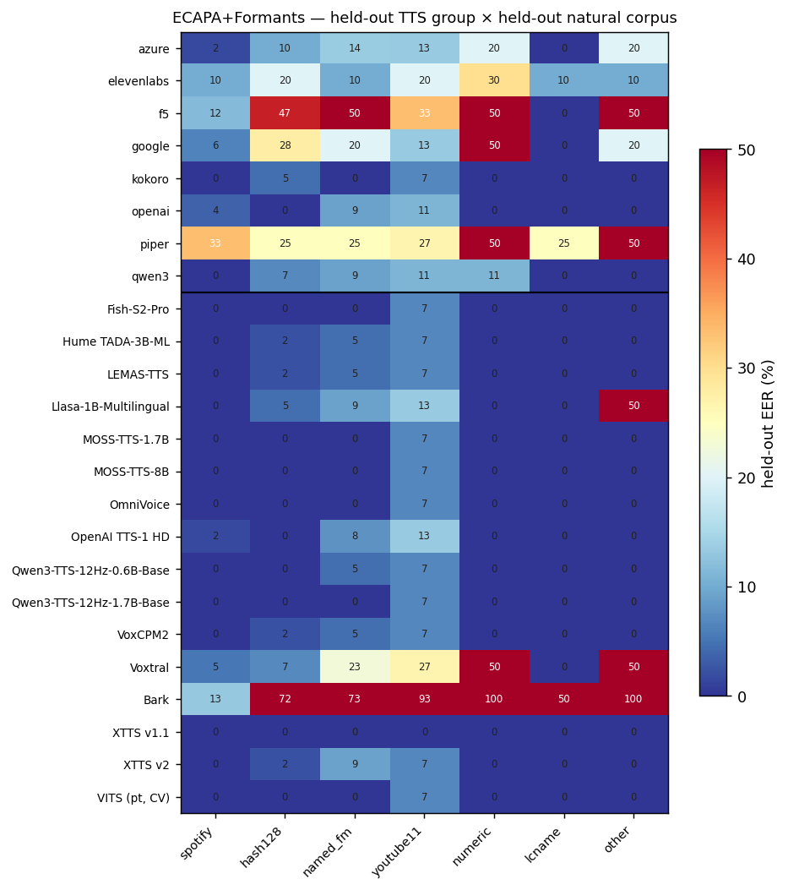
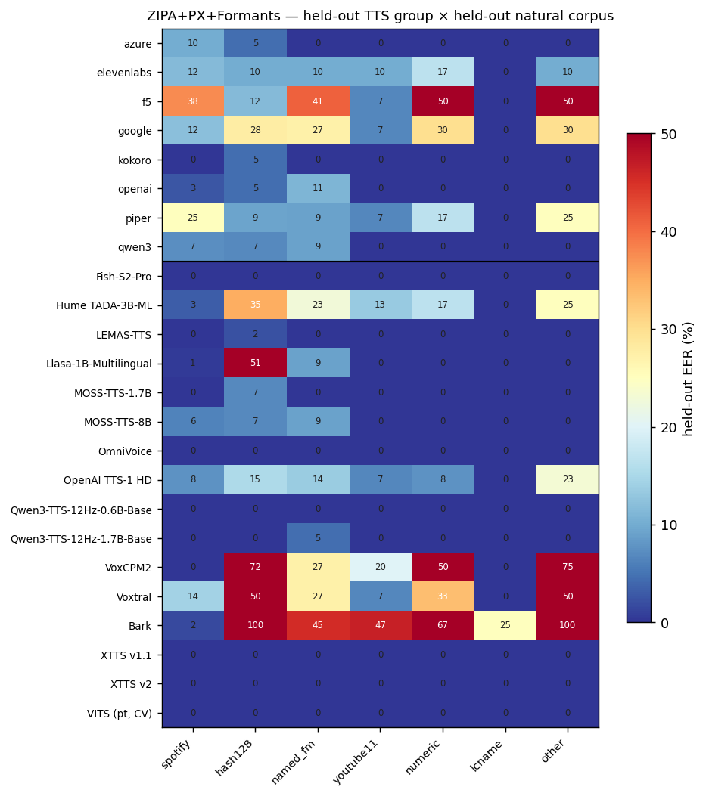
@inproceedings{leite2026synthetic,
title = {Synthetic speech detection in {B}razilian {P}ortuguese through accent-related features},
author = {Leite, Pedro H. L. and Valadares, Pedro Benevenuto and Biscainho, Luiz W. P.},
booktitle = {Proc. IEEE Spoken Language Technology Workshop (SLT)},
year = {2026}
}